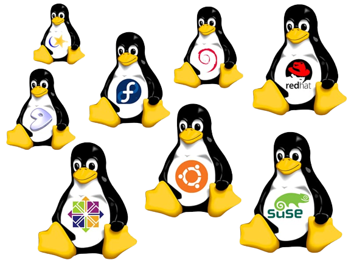

Conhecendo o Sistema Operacional Linux
O que é Linux?
Linux é um Sistema Operacional, assim como o Windows e o Mac OS, que possibilita a execução de programas em um computador e outros dispositivos. Linux pode ser livremente modificado e distribuído. Apesar desta interpretação ser simplista é perfeitamente correta e aceitável. Mas, em uma definição mais profunda e técnica, Linux é o nome dado apenas ao núcleo do sistema operacional, chamado de Kernel. Kernel é um conjunto de instruções que controla como será usado o processador, a memória, o disco e dispositivos periféricos. É o software presente em todo sistema operacional que determina como o computador deve funcionar. O Kernel Linux foi criado pelo Linus Torvalds, com a primeira versão oficial lançada em 1991. O Kernel por si só não tem utilidade prática. É preciso uma série de programas adicionais para seu uso efetivo, como interpretadores de comandos, compiladores para que seja possível o desenvolvimento de novos programas, editores de textos e assim por diante. Desde 1984, um projeto chamado de GNU criado por Richard Stallman tinha como meta o desenvolvimento de um sistema operacional livre baseado no Unix. O projeto então criou uma licença de software chamada de GPL. Ela permitia a modificação livre do código de um programa, desde que distribuído posteriormente desta mesma forma e mantida os créditos dos desenvolvedores. Ao longo de cinco anos o projeto já tinha criado a maior parte dos programas essenciais para um sistema operacional mas faltava um Kernel livre. Em 1992, Linus Torvalds adere a licença GPL o que torna o Kernel Linux um software livre. A junção das ferramentas do projetos GNU mas o Kernel Linux deu origem ao sistema operacional GNU/Linux. Então Linux é o nome do Kernel e GNU/Linux do sistema operacional (Kernel + programas essenciais). Mas pela simplicidade, Linux é o termo largamente aceito para definição do sistema operacional do pinguim e assim o chamaremos daqui em diante.
Linux está em todo lugar
O desenvolvimento do sistema operacional Linux contou com a colaboração de milhares de desenvolvedores desde então, e novos aplicativos foram adicionados que permitiram o uso do sistema nos mais diversos dispositivos e fins. Linux está em praticamente todo lugar. O roteador da sua casa, por exemplo, muito provavelmente utiliza Linux, assim como o codificador da sua TV a cabo. A internet é em grande maioria sustentada por servidores com sistemas Linux e outras soluções sob licença GPL. Softwares dominantes como servidor web Apache, DNS Bind, linguagens de programação PHP, Java, Javascripts, bancos de dados MySQL, PostgreSQL e tantos outros são outras soluções sob licença GPL, preferencialmente executadas em sistemas Linux e que fazem a web ser como conhecemos hoje. Facebook e Netflix rodam em Linux . Assim como a nuvem computacional mais popular do mundo, a Amazon AWS. O sistema operacional Android é baseado em Linux e de forma tão intima que muitos o consideram Linux. Em um mundo digital dominado por softwares livres, não se discute mais o uso do Linux. Ele está presente em nossas vidas de uma forma ou de outra. Você pode até especializar-se em uma ferramenta proprietária, mas certamente irá se deparar com Linux em algum momento de sua carreira. Conhecer Linux em qualquer nível é além de uma vantagem, uma viagem impressionante ao descobrimento. E tudo pode começar no seu Desktop.
Linux no Desktop.
O sistema operacional Linux ganhou centenas de aplicativos ao longo de seu desenvolvimento e que permitiram seu uso não só em servidores e sistema embarcados mas como também em Desktops. Instalar Linux no seu computador é a melhor forma de iniciar o aprendizado, que ocorrerá de forma gradual e natural. Você poderá instalar o Linux em um computador que já tenha o Windows e manter os dois sistemas operacionais. Poderá inclusive virtualizar o Linux dentro do Windows ou vice-versa
O Linux é bom devido as infinitas possibilidades.
O mundo Linux é dominado pela pluralidade. Como o código fonte dos programas podem ser livremente modificados, normalmente para cada solução existem mais de um aplicativo. O sistema gráfico de janelas, por exemplo, são vários no Linux. Cada um apresenta usabilidade, visual e funcionalidades únicas. Entre as interfaces disponíveis, UNITY, GNOME Shell e KDE são as majoritárias e com variações que levam a experiências diferentes. Há ainda Cinnamon, Mate, LXCE, XFCE, Pantheon Shell, OpenBox, Enlightenment, Fluxbox e outros. O mesmo vale para os demais aplicativos. Para cada segmento há muitas opções. E um programa pode ainda ser distribuído em um formato que não seja compatível com outro. A diversidade do Linux é sua vantagem, mas também seu maior desafio. Com tantas opções era preciso juntar todas as peças para entrega de uma solução acessível aos usuários. Aí que surgem as Distribuições Linux. Uma distribuição é um projeto com objetivo de empacotar um conjunto de aplicações Linux, com padrões estabelecidos e um assistente para instalação. Em uma analogia aos automóveis, seria uma montadora que une diversas peças para criação de um veículo pronto para ser usado. Cada distribuição é criada para um perfil de uso. Há àquela voltadas à simplicidade no uso em desktops, outras para servidores, aquelas com focam em Media centers, em computadores mais antigos ou com interfaces touch. A escolha dependerá da necessidade. Assim, para iniciar no Linux, sua primeira decisão deve ser qual distribuição usar e então desfrutar de um novo universo de possibilidades. Conte com uma comunidade muita receptiva a dúvidas de novos usuários e não deixe também de colaborar e seguir com esta corrente motivada pela transferência e evolução do conhecimento.